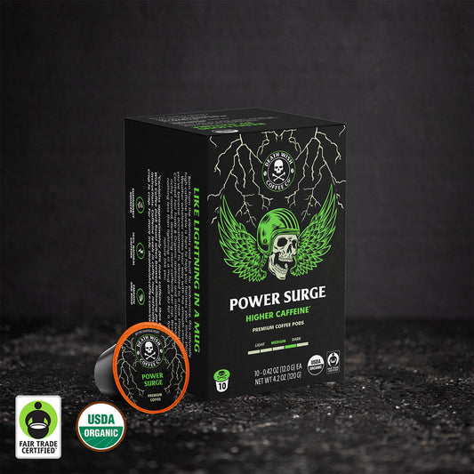
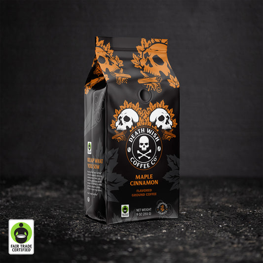
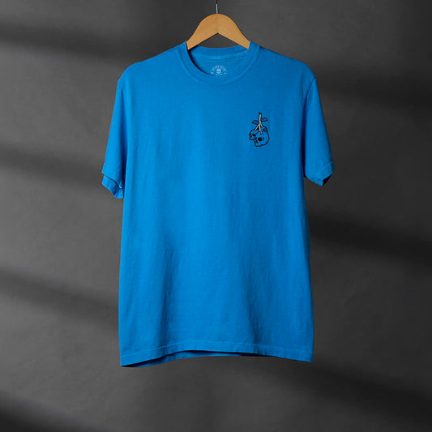
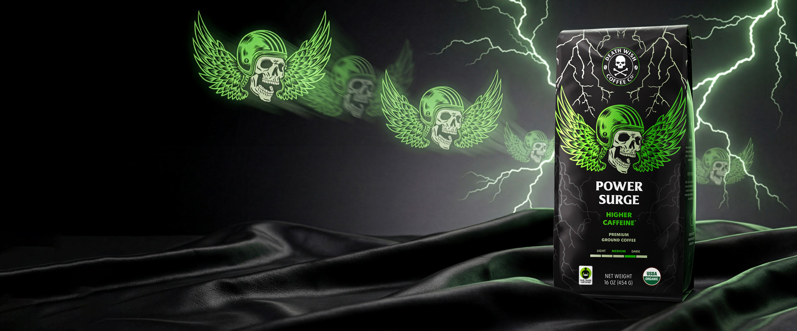
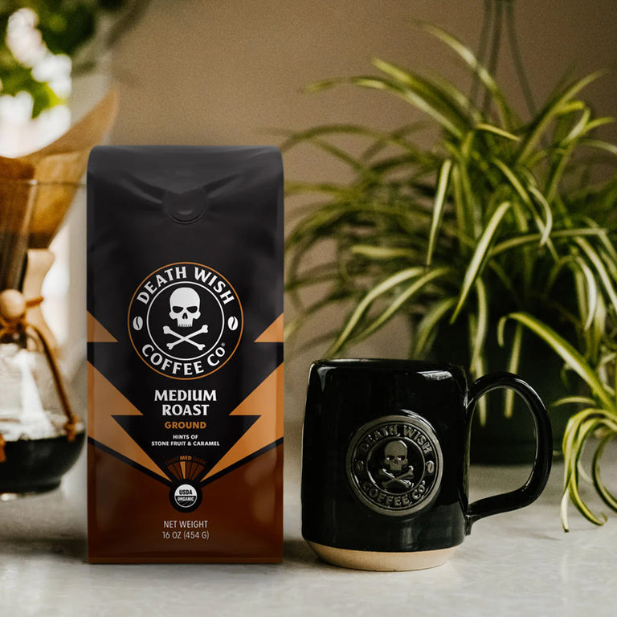
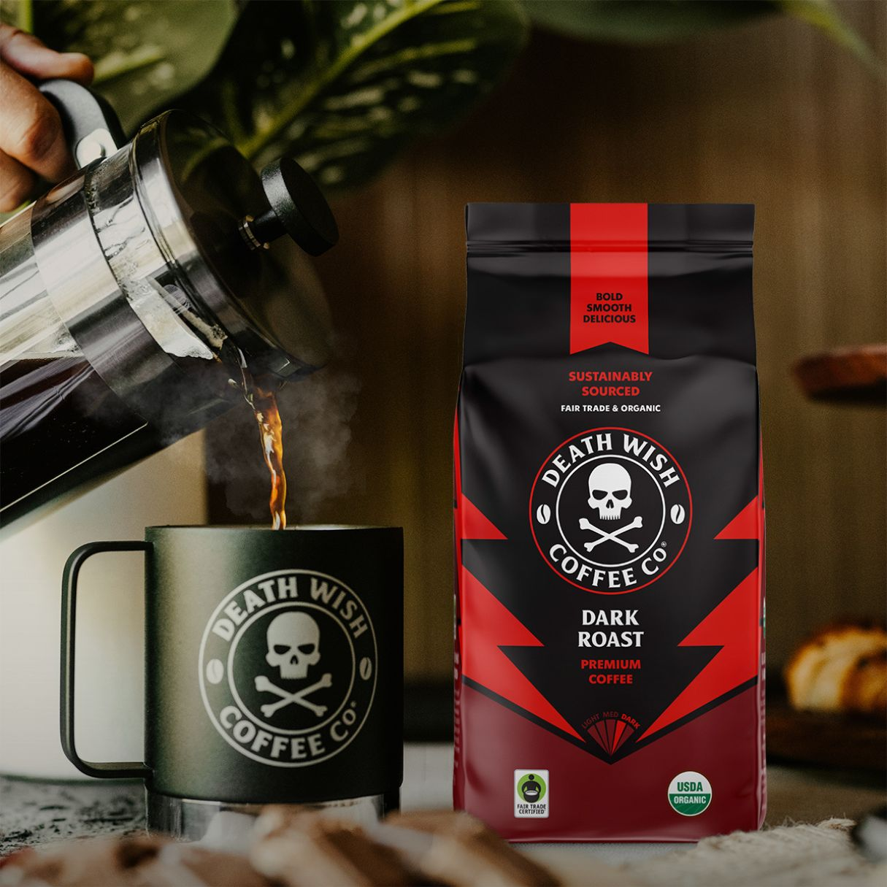

Landing: deathwishcoffee.com · modelo claude-haiku-4-5 · status=analyzed ·
8 imágenes (las 8 primeras de 39 sendable, orden de envío). Marca ✓/✗ en la última columna a tu criterio.
| # | Imagen (tal cual se clasificó) | Etiqueta del modelo | ¿Coincide? |
|---|---|---|---|
| 01 | kind=other background=unknown video_suitability=unusable has_overlay_text=false Daily_Mom press logo (blanco s/transparente) | ||
| 02 |  |
kind=packshot background=clean video_suitability=hero has_overlay_text=true Power Surge caja de pods | |
| 03 |  |
kind=packshot background=clean video_suitability=hero has_overlay_text=true Maple Cinnamon bolsa molido | |
| 04 |  |
kind=packshot background=clean video_suitability=hero has_overlay_text=false Camiseta Blueberry (merch) | |
| 05 |  |
kind=lifestyle background=busy video_suitability=broll has_overlay_text=true Banner Power Surge (rayos + texto) | |
| 06 |  |
kind=lifestyle background=busy video_suitability=broll has_overlay_text=false Medium Roast + taza + planta | |
| 07 |  |
kind=lifestyle background=busy video_suitability=broll has_overlay_text=true Core Dark Roast render en contexto | |
| 08 |  |
kind=other background=unknown video_suitability=unusable has_overlay_text=false Trend Hunter press logo (blanco s/transparente) |
Nota del verifier (no vinculante): las 8 lucen coherentes a simple vista — logos de prensa → other/unusable, cajas/bolsas sobre fondo limpio → packshot/hero, banners y escenas de contexto → lifestyle/broll. El veredicto ≥7/8 es tuyo.